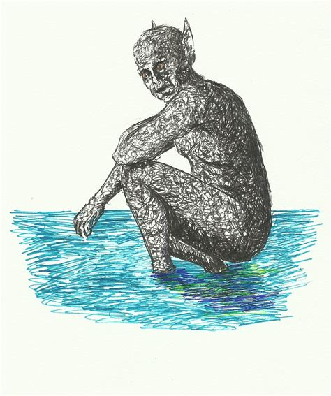

The caboclo d’água (water hillbilly) is a short, strong, one-eyed creature who inhabits the Rio São Francisco, an 1,800-mile river that runs through the Brazilian states of Minas Gerais, Bahia, Pernambuco, Alagoas, and Sergipe. He can be in multiple places at once and, if he feels like it, manifest as an animal.
The caboclo, being a beast of the water, primarily makes life hell for fishermen. When not scaring fish away from their hooks and nets, he’s attempting to flip their boats or run them aground. One account of the caboclo states that he appeared to a fisherman as a horse, floating dead in the water, but then came to life, submerged, and began rocking the boat like a madman. The caboclo may be temporarily placated by tossing some tobacco into the water, which is how the fisherman in the case of the “dead” horse above escaped loss of his boat. Preventive measures include painting a white star on or attaching knives to your boat’s hull, and/or carving scary figures upon its prow. It is said that the caboclo lives in a deep grotto decked with gold, but anyone crazy enough to search for this treasure – or even think about doing so – will be subject to the creature’s imminent attack.